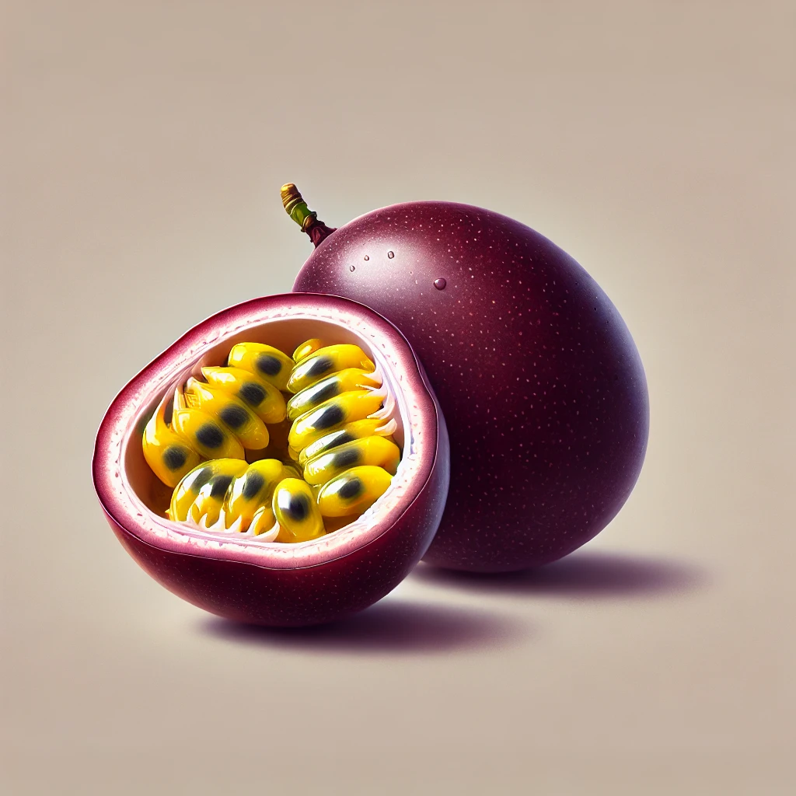

💜 Passievrucht

Weetjes over Passievrucht
- Passievruchten bevatten veel vitamine A en C.
- Ze groeien aan klimplanten in tropische regio's.
- De gele variant is zoeter dan de paarse variant.
- Passievrucht helpt bij stressvermindering.
10 Heerlijke Passievrucht Recepten
- Passievrucht Smoothie
- Passievrucht Cheesecake
- Passievrucht Mocktail
- Verse Passievrucht Salsa
- Yoghurt met Passievrucht
Terug naar Home